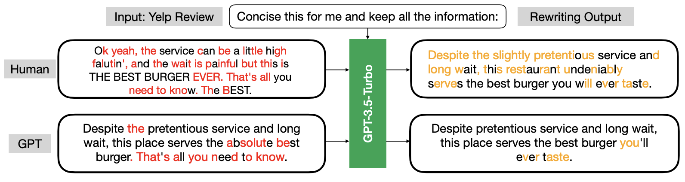
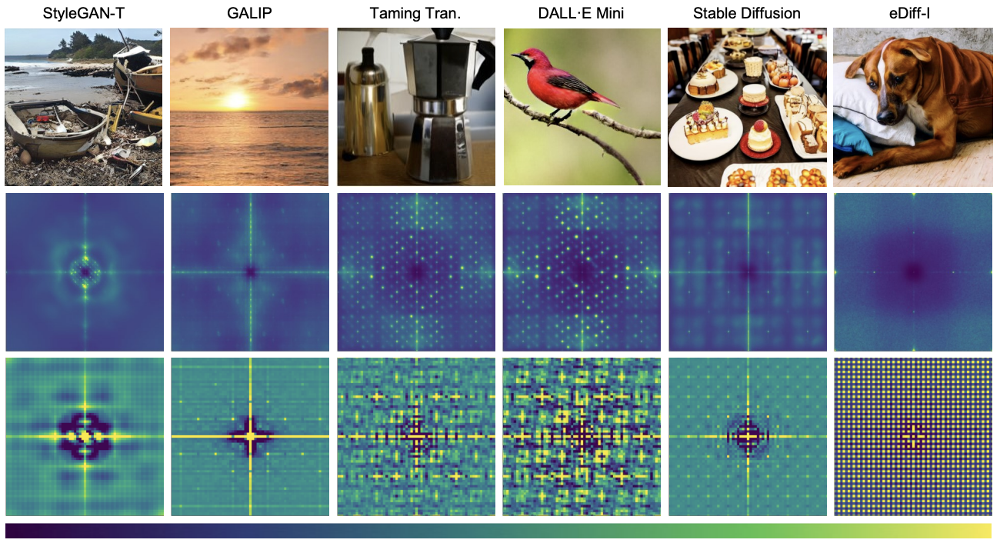

Counter Turing Test : Text - Please visit this link for details.

@ AAAI 2025
Fourth Workshop on Multimodal Fact Checking and Hate Speech
Detection
February, 2025
ABOUT THE WORKSHOP
Combating fake news is one of the pressing societal crises. It is difficult to expose false claims before they cause significant damage. Automatic fact and claim verification has recently become a topic of interest among diverse research communities. While research efforts and datasets on text-based fact verification are available, there has been limited attention towards multimodal or cross-modal fact verification. This workshop aims to encourage researchers from interdisciplinary domains working on multimodality and/or fact-checking to come together and work on multimodal (images, memes, videos) fact-checking. At the same time, multimodal hate speech detection is a critical problem but has not received sufficient attention. Lastly, learning joint modalities is of interest to both Natural Language Processing (NLP) and Computer Vision (CV) communities.
Over the last decade, both fields of study—NLP and CV—have made significant progress, largely due to the success of neural networks. Multimodal tasks like visual question answering (VQA), image captioning, video captioning, and caption-based image retrieval have gained prominence in both NLP and CV forums. Multimodality is the next big leap for the AI community. De-Factify is a dedicated forum for discussing challenges related to multimodal fake news and hate speech. We also encourage discussions on multimodal tasks in general.
Link to previous year's workshop : Defactify @ AAAI 2024
★ Shared Tasks
- System description paper : All teams/participants will be invited to submit a paper describing their system. Accepted papers will be published in formal proceedings.
- Paper submission instruction :TBD
-
CT2: AI-Generated Text Detection
The widespread use of AI models like ChatGPT has sparked concerns over the proliferation of AI-generated text. Several major organizations and conferences have already banned or restricted its use. The increasing presence of AI-generated content has made it critical to develop reliable methods for detecting such text. Two main approaches have emerged: watermarking, which embeds detectable markers during generation, and post-hoc methods, which analyze and identify AI-generated content after its creation. With the growing complexity of AI systems, the need for effective detection methods has never been more urgent.
A new interesting technique proposed at ICML 2024 finds that LLMs are more inclined to modify human-written text than AI-generated text when tasked with rewriting. This approach, named the geneRative AI Detection viA Rewriting method (Raidar), will be used as the baseline for the Shared Tasks.
The authors highlight character deletions in red and character insertions in orange. Their findings indicate that human-generated text generally prompts more modifications compared to machine-generated text when rewritten.
CT2: AI-Generated Image Detection
CT2: AI-Generated Image Detection addresses the growing challenge of identifying AI-generated images from models like DALL-E, Stable Diffusion, and Midjourney. As generative AI advances, detecting such content is vital for combating misinformation. This project provides a diverse dataset based on MS COCO, showcasing images from various models. Participants must determine whether images are AI-generated and identify the model used. Detection techniques include artifact-based and feature representation methods, enhancing accuracy in identifying AI-generated content.
Recent research shows that each generative model leaves detectable traces or "fingerprints" in the frequency domain of images, which can be used for forensic analysis.
Synthetic images generated by models like StyleGAN-T, GALIP, Taming Transformers, DALL·E Mini, Stable Diffusion, and eDiff-I (top) contain unique traces known as artificial fingerprints. These fingerprints are detectable in the frequency domain as spectral peaks in the power spectra (middle) and in the spatial domain as anomalous patterns in the auto-correlation (bottom). Similar artifacts are observed in models sharing similar architectures, enabling forensic analysis of generated content.
According to a report by the European Union Law Enforcement Agency, 90 percent of online content could be synthetically generated by 2026. Generative systems like DALL-E and Stable Diffusion are impressive but raise concerns about potential misuse, particularly in spreading misinformation. Some examples can be seen below:
A screenshot from a video showing Taylor Swift holding a flag reading "Trump Won" went viral in February 2024. The video, shared by numerous accounts on X, has reached over 4.5 million viewers. However, it is important to note that this content is AI-generated. For more details, see the Forbes story.
An AI-generated image of Pope Francis wearing a gigantic white puffer jacket went viral on social media platforms like Reddit and Twitter (X) in March of last year. This image sparked widespread media discussions about the potential misuse of Generative AI technologies, ultimately becoming an iconic example of AI-generated misinformation. For more details, see the Forbes story.
CALL FOR SUBMISSIONS
REGULAR PAPER SUBMISSION
Topics of Interest
This forum brings attention to collecting, measuring, managing, mining, and understanding multimodal disinformation, misinformation, and malinformation data from social media. This workshop covers (but is not limited to) the following topics:
- Development of corpora and annotation guidelines for multimodal fact-checking.
- Computational models for multimodal fact-checking.
- Development of corpora and annotation guidelines for multimodal hate speech detection and classification.
- Computational models for multimodal hate speech detection and classification.
- Analysis of the diffusion of multimodal fake news and hate speech in social networks.
- Understanding the impact of hate content on specific groups (such as targeted groups).
- Fake news and hate speech detection in low-resource languages.
- Hate speech normalization.
- Case studies and/or surveys related to multimodal fake news or hate speech.
- Analyzing behavior and psychology of multimodal hate speech/fake news propagators.
- Real-world/applied tool development for multimodal hate speech/fake news detection.
- Early detection of multimodal fake news/hate speech.
- Use of modalities other than text and images (such as audio, video, etc.).
- Evolution of multimodal fake news and hate speech.
- Information extraction, ontology design, and knowledge graph creation for multimodal hate speech and fake news.
- Cross-lingual, code-mixed, and code-switched multimodal fake news/hate speech analysis.
- Computational social science.
Submission Instructions:
- Long papers: Novel, unpublished, high-quality research papers. 10 pages excluding references.
- Short papers: 5 pages excluding references.
- Previously rejected papers: You can attach comments from previously rejected papers (AAAI, NeurIPS) and a 1-page cover letter explaining the changes made.
- Extended abstracts: 2 pages excluding references. Non-archival, can be previously published papers or work in progress.
- All papers must be submitted via our EasyChair submission page.
- Regular papers will go through a double-blind peer-review process. Extended abstracts may be either single-blind (i.e., reviewers are blind, authors have names on submission) or double-blind (i.e., authors and reviewers are blind). Only manuscripts in PDF or Microsoft Word format will be accepted.
- Paper template: http://ceur-ws.org/Vol-XXX/CEURART.zip or https://www.overleaf.com/read/gwhxnqcghhdt
Paper Submission Link: EasyChair
Important Dates:
- 05 January 2025: Papers due at 11:59 PM UTC-12
- 20 January 2025: Notification of papers
- 25 January 2025: Camera-ready submission of accepted papers due at 11:59 PM UTC-12
Shared tasks
Counter Turing Test : Images - Please visit this link for details.
Counter Turing Test : Text
Shared Task Important Dates:
- 31 October 2024: Release of the training set.
- 10 November 2024: Release of the test set.
- 2 December 2024: Release of the Updated test set.
30 November7 December 2024: Deadline for submitting the final results.- 12 December 2024: Announcement of the results.
- 05 January 2025: System paper submission deadline (All teams are invited to submit a paper).
- 20 January 2025: Notification of system papers.
- 25 January 2025: Camera-ready submission.
Counter Turing Test : Image
Shared Task Important Dates:
- 22 October 2024: Release of the training set.
- 10 November 2024: Release of the test set.
- 2 December 2024: Release of the Updated test set.
30 November7 December 2024: Deadline for submitting the final results.- 12 December 2024: Announcement of the results.
- 05 January 2025: System paper submission deadline (All teams are invited to submit a paper).
- 20 January 2025: Notification of system papers.
- 25 January 2025: Camera-ready submission.
Accepted Papers
To be announced
Invited Talks
To be announced